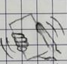

To-Shake

Kurzbeschreibung: Sie können mit der To-Shake App eine To-Do Liste erstellen. Mit der To-Shake App können Sie
Ihre Aufgaben planen, verwalten und im Auge behalten. Wenn man dabei das Handy "shaket”, kann man eine Aufgabe abhaken. Zudem kann man auch Fotos an eine Aufgabe anhängen.